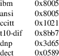

srec_input - input file specifications
srec_* filename [ format ]
This manual page describes the input file specifications for the srec_cat(1), srec_cmp(1) and srec_info(1) commands.
Input files may be qualified in a number of ways: you may specify their format and you may specify filters to apply to them. An input file specification looks like this:
filename [ format ][ -ignore-checksums ][ filter ... ]
The filename may be specified as a file name, or the special name “-” which is understood to mean the standard input.
Grouping
with Parentheses
There are some cases where operator precedence of the
filters can be ambiguous. Input specifications may also be
enclosed by ( parentheses ) to make grouping
explicit. Remember that the parentheses must be separate
words, i.e. surrounded by spaces, and they will need
to be quoted to get them past the shell’s
interpretation of parentheses.
Those Option
Names Sure Are Long
All options may be abbreviated; the abbreviation is
documented as the upper case letters, all lower case letters
and underscores (_) are optional. You must use consecutive
sequences of optional letters.
All options are case insensitive, you may type them in upper case or lower case or a combination of both, case is not important.
For example: the arguments “-help”, “-HEL” and “-h” are all interpreted to mean the -Help option. The argument “-hlp” will not be understood, because consecutive optional characters were not supplied.
Options and other command line arguments may be mixed arbitrarily on the command line.
The GNU long option names are understood. Since all option names for srec_input are long, this means ignoring the extra leading “-”. The “--option=value” convention is also understood.
File
Formats
The format is specified by the argument after
the file name. The format defaults to Motorola S-Record if
not specified. The format specifiers are:
-Absolute_Object_Module_Format
This option says to use the Intel Absolute Object Module Format (AOMF) to read the file. (See srec_aomf(5) for a description of this file format.)
-Ascii_Hex
This option says to use the Ascii-Hex format to read the file. See srec_ascii_hex(5) for a description of this file format.
-Atmel_Generic
This option says to use the Atmel Generic format to read the file. See srec_atmel_genetic(5) for a description of this file format.
|
-Binary |
This option says the file is a raw binary file, and should be read literally. (This option may also be written -Raw.) See srec_binary(5) for more information. |
-B-Record
This option says to use the Freescale MC68EZ328 Dragonball bootstrap b-record format to read the file. See srec_brecord(5) for a description of this file format.
|
-COsmac |
This option says to use the RCA Cosmac Elf format to read the file. See srec_cosmac(5) for a description of this file format. |
-Dec_Binary
This option says to use the DEC Binary (XXDP) format to read the file. See srec_dec_binary(5) for a description of this file format.
-Elektor_Monitor52
This option says to use the EMON52 format to read the file. See srec_emon52(5) for a description of this file format.
-FAIrchild
This option says to use the Fairchild Fairbug format to read the file. See srec_fairchild(5) for a description of this file format.
-Fast_Load
This option says to use the LSI Logic Fast Load format to read the file. See srec_fastload(5) for a description of this file format.
-Formatted_Binary
This option says to use the Formatted Binary format to read the file. See srec_formatted_binary(5) for a description of this file format.
-Four_Packed_Code
This option says to use the FPC format to read the file. See srec_fpc(5) for a description of this file format.
|
-Guess |
This option may be used to ask the command to guess the input format. This is slower than specifying an explicit format, as it may open and scan and close the file a number of times. |
-HEX_Dump
This option says to try to read a hexadecimal dump file, more or less in the style output by the same option. This is not an exact reverse mapping, because if there are ASCII equivalents on the right hand side, these may be confused for data bytes. Also, it doesn’t understand white space representing holes in the data in the line.
|
-IDT |
This option says to the the IDT/sim binary format to read the file. See srec_idt(5) for a description of this file format. | ||
|
-Intel |
This option says to use the Intel hex format to read the file. See srec_intel(5) for a description of this file format. |
-INtel_HeX_16
This option says to use the Intel hex 16 (INHX16) format to read the file. See srec_intel16(5) for a description of this file format.
-LOGIsim
This format is read and written by the open source Logisim program. See srec_logisim(5) for more informatuion.
-Memory_Initialization_File
This option says to use the Memory Initialization File (MIF) format by Altera to read the file. See srec_mif (5) for a description of this file format.
-Mips_Flash_Big_Endian
-Mips_Flash_Little_Endian
These options say to use the MIPS Flash file format to read the file. See srec_mips_flash (5) for a description of this file format.
-MOS_Technologies
This option says to use the Mos Technologies format to read the file. See srec_mos_tech(5) for a description of this file format.
-Motorola [ width ]
This option says to use the Motorola S-Record format to read the file. (May be written -S-Record as well.) See srec_motorola(5) for a description of this file format.
The optional width argument describes the number of bytes which form each address multiple. For normal uses the default of one (1) byte is appropriate. Some systems with 16-bit or 32-bit targets mutilate the addresses in the file; this option will correct for that. Unlike most other parameters, this one cannot be guessed.
|
-MsBin |
This option says to use the Windows CE Binary Image Data Format to read the file. See srec_msbin(5) for a description of this file format. |
-Needham_Hexadecimal
This option says to use the Needham Electronics ASCII file format to read the file. See srec_needham(5) for a description of this file format.
-Ohio_Scientific
This option says to use the Ohio Scientific format. See srec_os65v(5) for a description of this file format.
|
-PPB |
This option says to use the Stag Prom Programmer binary format. See srec_ppb(5) for a description of this file format. | ||
|
-PPX |
This option says to use the Stag Prom Programmer hexadecimal format. See srec_ppx(5) for a description of this file format. |
-SIGnetics
This option says to use the Signetics format. See srec_spasm(5) for a description of this file format.
|
-SPAsm |
This is a synonym for the -SPAsm_Big_Endian option. |
-SPAsm_Big_Endian
This option says to use the SPASM assembler output format (commonly used by PIC programmers). See srec_spasm(5) for a description of this file format.
-SPAsm_Little_Endian
This option says to use the SPASM assembler output format, but with the data the other way around.
|
-STewie |
This option says to use the Stewie binary format to read the file. See srec_stewie(5) for a description of this file format. |
-Tektronix
This option says to use the Tektronix hex format to read the file. See srec_tektronix(5) for a description of this file format.
-Tektronix_Extended
This option says to use the Tektronix extended hex format to read the file. See srec_tektronix_extended(5) for a description of this file format.
-Texas_Instruments_Tagged
This option says to use the Texas Instruments Tagged format to read the file. See srec_ti_tagged(5) for a description of this file format.
-Texas_Instruments_Tagged_16
This option says to use the Texas Instruments SDSMAC 320 format to read the file. See srec_ti_tagged_16(5) for a description of this file format.
-Texas_Instruments_TeXT
This option says to use the Texas Instruments TXT (MSP430) format to read the file. See srec_ti_txt(5) for a description of this file format.
|
-TRS80 |
This option says to use the Radio Shack TRS-80 object file format to read the file. See srec_trs80(5) for a description of this file format. | ||
|
-VMem |
This option says to use the Verilog VMEM format to read the file. See srec_vmem(5) for a description of this file format. | ||
|
-WILson |
This option says to use the wilson format to read the file. See srec_wilson(5) for a description of this file format. |
Ignore
Checksums
The -IGnore-Checksums option may be used to disable
checksum validation of input files, for those formats which
have checksums at all. Note that the checksum values are
still read in and parsed (so it is still an error if they
are missing) but their values are not checked. Used after an
input file name, the option affects that file alone; used
anywhere else on the command line, it applies to all
following files.
-redundant-bytes=value
Use this option to permit a
file to contain redundant values for some memory locations.
The default is for this condition to be a warning.
ignore
No warning or error is issued whena redundant settings are detected.
warning
A warning is issued when a redundant settings are observed, the warning includes the problematic address.
error
A fatal error is issued when a redundant settings are observed, the fatal error message includes the problematic address and byte value.
-contradictory-bytes=value
Use this option to permit a
file to contain contradictory values for some memory
locations. The last value in the input(s) will be used. The
default is for this condition to be a fatal error.
ignore
No warning or error is issued when contradictory setting is detected.
warning
A warning is issued when a vontradictory settings are observed, the warning includes the problematic address, and values.
error
A fatal error is issued when contradictory settings are observed, the fatal error message includes the problematic address and byte values.
Generators
It is also possible to generate data, rather than read it
from a file. You may use a generator anywhere you could use
a file. An input generator specification looks like
this:
-GENerate address-range -data-source
The
-data-source may be one of the following:
-CONSTant byte-value
This generator manufactures data with the given byte value of the the given address range. It is an error if the byte-value is not in the range 0..255.
For example, to fill memory addresses 100..199 with newlines (0x0A), you could use a command like
srec_cat -generate 100 200 -constant 10 -o newlines.srec
This can, of course, be combined with data from files.
-REPeat_Data byte-value...
This generator manufactures data with the given byte values repeating over the the given address range. It is an error if any of the the byte-values are not in the range 0..255.
For example, to create a data region with 0xDE in the even bytes and 0xAD in the odd bytes, use a generator like this:
srec_cat -generate 0x1000 0x2000 -repeat-data 0xDE 0xAD
The repeat boundaries are aligned with the base of the address range, modulo the number of bytes.
-REPeat_String text
This generator is almost identical to -repeat-data except that the data to be repeated is the text of the given string.
For example, to fill the holes in an EPROM image eprom.srec with the text “Copyright (C) 1812 Tchaikovsky”, combine a generator and an -exclude filter, such as the command
If you need to inject binary data into the string (e.g. a terminating NUL character), use the URL encoding that uses % followed by two hexadeimal characters. For example a backspace would be encoded as “%08”.
srec_cat
eprom.srec \
-generate 0 0x100000 \
-repeat-string ’Copyright (C) 1812 Tchaikovsky.
’ \
-exclude -within eprom.srec \
-o eprom.filled.srec
The thing to note is that we have two data sources: the eprom.srec file, and generated data over an address range which covers first megabyte of memory but excluding areas covered by the eprom.srec data.
-CONSTant_Little_Endian value width
This generator manufactures data with the given numeric value, of a given byte width, in little-endian byte order. It is an error if the given value does not fit into the given byte width. It will repeat over and over within the address range range.
For example, to insert a subversion commit number into 4 bytes at 0x0008..0x000B you would use a command like
srec_cat
-generate 8 12 -constant-l-e $VERSION 4 \
-o version.srec
This generator is a convenience wrapper around the -REPeat_Data generator. It can, of course, be combined with data from files.
-CONSTant_Big_Endian value width
As above, but using big-endian byte ordering.
Anything else will result in an error.
Input
Filters
You may specify zero or more filters to be applied.
Filters are applied in the order the user specifies.
-Adler_16_Big_Endian address
This filter may be used to insert an “Adler” 16-bit checksum of the data into the data. Two bytes, big-endian order, are inserted at the address given. Holes in the input data are ignored. Bytes are processed in ascending address order (not in the order they appear in the input).
Note: If you have holes in your data, you will get a different Adler checksum than if there were no holes. This is important because the in-memory EPROM image will not have holes. You almost always want to use the -fill filter before any of the Adler checksum filters. You will receive a warning if the data presented for Adler checksum has holes.
You should also be aware that the lower and upper bounds of your data may not be the same as the lower and upper bounds of your EPROM. This is another reason to use the -fill filter, because it will establish the data across the full EPROM address range.
http://en.wikipedia.org/wiki/Adler-32
-Adler_16_Little_Endian address
This filter may be used to insert an Adler 16-bit checksum of the data into the data. Two bytes, in little-endian order, are inserted at the address given. Holes in the input data are ignored. Bytes are processed in ascending address order (not in the order they appear in the input).
Note: If you have holes in your data, you will get a different Adler checksum than if there were no holes. This is important because the in-memory EPROM image will not have holes. You almost always want to use the -fill filter before any of the Adler filters. You will receive a warning if the data presented for Adler checksum has holes.
You should also be aware that the lower and upper bounds of your data may not be the same as the lower and upper bounds of your EPROM. This is another reason to use the -fill filter, because it will establish the data across the full EPROM address range.
http://en.wikipedia.org/wiki/Adler-32
-Adler_32_Big_Endian address
This filter may be used to insert a Adler 32-bit checksum of the data into the data. Four bytes, big-endian order, are inserted at the address given. Holes in the input data are ignored. Bytes are processed in ascending address order (not in the order they appear in the input).
Note: If you have holes in your data, you will get a different Adler checksum than if there were no holes. This is important because the in-memory EPROM image will not have holes. You almost always want to use the -fill filter before any of the Adler checksum filters. You will receive a warning if the data presented for Adler checksum has holes.
You should also be aware that the lower and upper bounds of your data may not be the same as the lower and upper bounds of your EPROM. This is another reason to use the -fill filter, because it will establish the data across the full EPROM address range.
http://en.wikipedia.org/wiki/Adler-32
-Adler_32_Little_Endian address
This filter may be used to insert a Adler 32-bit checksum of the data into the data. Four bytes, in little-endian order, are inserted at the address given. Holes in the input data are ignored. Bytes are processed in ascending address order (not in the order they appear in the input).
Note: If you have holes in your data, you will get a different Adler checksum than if there were no holes. This is important because the in-memory EPROM image will not have holes. You almost always want to use the -fill filter before any of the Adler checksum filters. You will receive a warning if the data presented for Adler checksum has holes.
You should also be aware that the lower and upper bounds of your data may not be the same as the lower and upper bounds of your EPROM. This is another reason to use the -fill filter, because it will establish the data across the full EPROM address range.
http://en.wikipedia.org/wiki/Adler-32
-AND value
This filter may be used to bit-wise AND a value to every data byte. This is useful if you need to clear bits. Only existing data is altered, no holes are filled.
-Bit_Reverse [ width ]
This filter may be used to reverse the order of the bits in each data byte. By specifying a width (in bytes) it is possible to reverse the order multi-byte values; this is implemented using the byte-swap filter.
-Byte_Swap [ width ]
This filter may be used to swap pairs of odd and even bytes. By specifying a width (in bytes) it is possible to reverse the order of 4 and 8 bytes, the default is 2 bytes. (Widths in excess of 8 are assumed to be number of bits.) It is not possible to swap non-power-of-two addresses. To change the alignment, use the offset filter before and after.
-Checksum_BitNot_Big_Endian address [ nbytes [ width ]]
This filter may be used to insert the one’s complement checksum of the data into the data, most significant byte first. The data is literally summed; if there are duplicate bytes, this will produce an incorrect result, if there are holes, it will be as if they were filled with zeros. If the data already contains bytes at the checksum location, you need to use an exclude filter, or this will generate errors. You need to apply and crop or fill filters before this filter. The value will be written with the most significant byte first. The number of bytes of resulting checksum defaults to 4. The width (the width in bytes of the values being summed) defaults to 1.
-Checksum_BitNot_Little_Endian address [ nbytes [ width ]]
This filter may be used to insert the one’s complement (bitnot) checksum of the data into the data, least significant byte first. Otherwise similar to the above.
-Checksum_Negative_Big_Endian address [ nbytes [ width ]]
This filter may be used to insert the two’s complement (negative) checksum of the data into the data. Otherwise similar to the above.
-Checksum_Negative_Little_Endian address [ nbytes [ width ]]
This filter may be used to insert the two’s complement (negative) checksum of the data into the data. Otherwise similar to the above.
-Checksum_Positive_Big_Endian address [ nbytes [ width ]]
This filter may be used to insert the simple checksum of the data into the data. Otherwise similar to the above.
-Checksum_Positive_Little_Endian address [ nbytes [ width ]]
This filter may be used to insert the simple checksum of the data into the data. Otherwise similar to the above.
-CRC16_Big_Endian address [ modifier... ]
This filter may be used to insert an industry standard 16-bit CRC checksum of the data into the data. Two bytes, big-endian order, are inserted at the address given. Holes in the input data are ignored. Bytes are processed in ascending address order (not in the order they appear in the input).
The following additional modifiers are understood:
|
number |
Set the polynomial to be used to the given number. |
-POLYnomial name
This option may be used to set the CRC polynomial to be used, by name. The known names include:

See http://en.wikipedia.org/wiki/Cyclic_redundancy_check for a table of names and values.
-Most_To_Least
The CRC calculation is performed with the most significant bit in each byte processed first, and then proceeding towards the least significant bit. This is the default.
-Least_To_Most
The CRC calculation is performed with the least significant bit in each byte processed first, and then proceeding towards the most significant bit.
|
-CCITT |
The CCITT calculation is performed. The initial seed is 0xFFFF. This is the default. | ||
|
-XMODEM |
The alternate XMODEM calculation is performed. The initial seed is 0x0000. | ||
|
-BROKEN |
A common-but-broken calculation is performed (see note 2 below). The initial seed is 0x84CF. |
-AUGment
The CRC is augmented by sixteen zero bits at the end of the calculation. This is the default.
-No-AUGment
The CRC is not augmented at the end of the calculation. This is less standard conforming, but some implementations do this.
Note: If you have holes in your data, you will get a different CRC than if there were no holes. This is important because the in-memory EPROM image will not have holes. You almost always want to use the -fill filter before any of the CRC filters. You will receive a warning if the data presented for CRC has holes.
You should also be aware that the lower and upper bounds of your data may not be the same as the lower and upper bounds of your EPROM. This is another reason to use the -fill filter, because it will establish the data across the full EPROM address range.
Note 2: there are a great many CRC16 implementations out there, see http://www.joegeluso.com/software/articles/ccitt.htm (now gone, reproduced at http://srecord.sourceforge.net- /crc16-ccitt.html) and “A painless guide to CRC error detection algorithms” http://www.repairfaq.org/filipg/LINK/F_crc_v3.html for more information. If all else fails, SRecord is open source software: read the SRecord source code. The CRC16 source code (found in the srecord/crc16.cc file of the distribution tarball) has a great many explanatory comments.
Please try all twelve combinations of the above options before reporting a bug in the CRC16 calculation.
-CRC16_Little_Endian address [ modifier... ]
The same as the -CRC16_Big_Endian filter, except in little-endian byte order.
-CRC32_Big_Endian address [ modifier... ]
This filter may be used to insert an industry standard 32-bit CRC checksum of the data into the data. Four bytes, big-endian order, are inserted at the address given. Holes in the input data are ignored. Bytes are processed in ascending address order (not in the order they appear in the input). See also the note about holes, above.
The following additional modifiers are understood:
|
-CCITT |
The CCITT calculation is performed. The initial seed is all one bits. This is the default. | ||
|
-XMODEM |
An alternate XMODEM-style calculation is performed. The initial seed is all zero bits. |
-CRC32_Little_Endian address
The same as the -CRC32_Big_Endian filter, except in little-endian byte order.
-Crop address-range
This filter may be used to isolate a section of data, and discard the rest.
-Exclude address-range
This filter may be used to exclude a section of data, and keep the rest. The is the logical complement of the -Crop filter.
-Exclusive_Length_Big_Endian address [ nbytes [ width ]]
The same as the -Length_Big_Endian filter, except that the result does not include the length itself.
-Exclusive_Length_Little_Endian address [ nbytes [ width ]]
The same as the -Length_Little_Endian filter, except that the result does not include the length itself.
-Exclusive_MAXimum_Big_Endian address [ nbytes ]
The same as the -MAXimum_Big_Endian filter, except that the result does not include the maximum itself.
-Exclusive_MAXimum_Little_Endian address [ nbytes ]
The same as the -MAXimum_Little_Endian filter, except that the result does not include the maximum itself.
-Exclusive_MINimum_Big_Endian address [ nbytes ]
The same as the -MINimum_Big_Endian filter, except that the result does not include the minimum itself.
-Exclusive_MINimum_Little_Endian address [ nbytes ]
The same as the -MINimum_Little_Endian filter, except that the result does not include the minimum itself.
-eXclusive-OR value
This filter may be used to bit-wise XOR a value to every data byte. This is useful if you need to invert bits. Only existing data is altered, no holes are filled.
-Fill value address-range
This filter may be used to fill any gaps in the data with bytes equal to value. The fill will only occur in the address range given.
-Fletcher_16_Big_Endian address [ sum1 sum2 [ answer ]]
This filter may be used to insert an Fletcher 16-bit checksum of the data into the data. Two bytes, big-endian order, are inserted at the address given. Holes in the input data are ignored. Bytes are processed in ascending address order (not in the order they appear in the input).
Note: If you have holes in your data, you will get a different Fletcher checksum than if there were no holes. This is important because the in-memory EPROM image will not have holes. You almost always want to use the -fill filter before any of the Fletcher checksum filters. You will receive a warning if the data presented for Fletcher checksum has holes.
You should also be aware that the lower and upper bounds of your data may not be the same as the lower and upper bounds of your EPROM. This is another reason to use the -fill filter, because it will establish the data across the full EPROM address range.
http://en.wikipedia.org/wiki/Fletcher%27s_checksum
It is possible to select seed values for sum1 and sum2 in the algorithm, by adding seed values on the command line. They each default to 0xFF if not explicitly stated. The default values (0) means that an empty EPROM (all 0x00 or all 0xFF) will sum to zero; by changing the seeds, an empty EPROM will always fail.
The third optional argument is the desired sum, when the checksum itself is summed. A common value is 0x0000, placed in the last two bytes of an EPROM, so that the Fletcher 16 checksum of the EPROM is exactly 0x0000. No manipulation of the final value is performed if this value if not specified.
-Fletcher_16_Little_Endian address
This filter may be used to insert an Fletcher 16-bit checksum of the data into the data. Two bytes, in little-endian order, are inserted at the address given. Holes in the input data are ignored. Bytes are processed in ascending address order (not in the order they appear in the input).
Note: If you have holes in your data, you will get a different Fletcher checksum than if there were no holes. This is important because the in-memory EPROM image will not have holes. You almost always want to use the -fill filter before any of the Fletcher filters. You will receive a warning if the data presented for Fletcher checksum has holes.
You should also be aware that the lower and upper bounds of your data may not be the same as the lower and upper bounds of your EPROM. This is another reason to use the -fill filter, because it will establish the data across the full EPROM address range.
http://en.wikipedia.org/wiki/Fletcher%27s_checksum
-Fletcher_32_Big_Endian address
This filter may be used to insert a Fletcher 32-bit checksum of the data into the data. Four bytes, big-endian order, are inserted at the address given. Holes in the input data are ignored. Bytes are processed in ascending address order (not in the order they appear in the input).
Note: If you have holes in your data, you will get a different Fletcher checksum than if there were no holes. This is important because the in-memory EPROM image will not have holes. You almost always want to use the -fill filter before any of the Fletcher checksum filters. You will receive a warning if the data presented for Fletcher checksum has holes.
You should also be aware that the lower and upper bounds of your data may not be the same as the lower and upper bounds of your EPROM. This is another reason to use the -fill filter, because it will establish the data across the full EPROM address range.
http://en.wikipedia.org/wiki/Fletcher%27s_checksum
-Fletcher_32_Little_Endian address
This filter may be used to insert a Fletcher 32-bit checksum of the data into the data. Four bytes, in little-endian order, are inserted at the address given. Holes in the input data are ignored. Bytes are processed in ascending address order (not in the order they appear in the input).
Note: If you have holes in your data, you will get a different Fletcher checksum than if there were no holes. This is important because the in-memory EPROM image will not have holes. You almost always want to use the -fill filter before any of the Fletcher checksum filters. You will receive a warning if the data presented for Fletcher checksum has holes.
You should also be aware that the lower and upper bounds of your data may not be the same as the lower and upper bounds of your EPROM. This is another reason to use the -fill filter, because it will establish the data across the full EPROM address range.
http://en.wikipedia.org/wiki/Fletcher%27s_checksum
-Length_Big_Endian address [ nbytes [ width ]]
This filter may be used to insert the length of the data (high water minus low water) into the data. This includes the length itself. If the data already contains bytes at the length location, you need to use an exclude filter, or this will generate errors. The value will be written with the most significant byte first. The number of bytes defaults to 4. The width defaults to 1, and is divided into the actual length, thus you can insert the width in units of words (2) or longs (4).
-Length_Little_Endian address [ nbytes [ width ]]
The same as the -Length_Big_Endian filter, except the value will be written with the least significant byte first.
-MAXimum_Big_Endian address [ nbytes ]
This filter may be used to
insert the maximum address of the data (high water
+ 1) into the data. This includes the maximum itself. If the
data already contains bytes at the given address, you need
to use an exclude filter, or this will generate errors. The
value will be written with the most significant byte first.
The number of bytes defaults to 4.
-MAXimum_Little_Endian address [ nbytes ]
The same as the -MAXimum_Big_Endian filter, except the value will be written with the least significant byte first.
-Message_Digest_5 address
This filter may be used to insert a 16 byte MD5 hash into the data, at the address given.
-MINimum_Big_Endian address [ nbytes ]
This filter may be used to insert the minimum address of the data (low water) into the data. This includes the minimum itself. If the data already contains bytes at the given address, you need to use an exclude filter, or this will generate errors. The value will be written with the most significant byte first. The number of bytes defaults to 4.
-MINimum_Little_Endian address [ nbytes ]
The same as the -MINimum_Big_Endian filter, except the value will be written with the least significant byte first.
|
-NOT |
This filter may be used to bit-wise NOT the value of every data byte. This is useful if you need to invert the data. Only existing data is altered, no holes are filled. |
-OFfset nbytes
This filter may be used to offset the addresses by the given number of bytes. No data is lost, the addresses will wrap around in 32 bits, if necessary. You may use negative numbers for the offset, if you wish to move data lower in memory.
Please note: the execution start address is a different concept than the first address in memory of your data. If you want to change where your monitor will start executing, use the -execution-start-address option (srec_cat(1) only).
-OR value
This filter may be used to bit-wise OR a value to every data byte. This is useful if you need to set bits. Only existing data is altered, no holes are filled.
-Random_Fill address-range
This filter may be used to fill any gaps in the data with random bytes. The fill will only occur in the address range given.
-Ripe_Message_Digest_160 address
This filter may be used to insert an RMD160 hash into the data.
-Secure_Hash_Algorithm_1 address
This filter may be used to insert a 20 byte SHA1 hash into the data, at the address given.
-Secure_Hash_Algorithm_224 address
This filter may be used to insert a 28 byte SHA224 hash into the data, at the address given. See Change Notice 1 for FIPS 180-2 for the specification.
-Secure_Hash_Algorithm_256 address
This filter may be used to insert a 32 byte SHA256 hash into the data, at the address given. See FIPS 180-2 for the specification.
-Secure_Hash_Algorithm_384 address
This filter may be used to insert a 48 byte SHA384 hash into the data, at the address given. See FIPS 180-2 for the specification.
-Secure_Hash_Algorithm_512 address
This filter may be used to insert a 64 byte SHA512 hash into the data, at the address given. See FIPS 180-2 for the specification.
-SPlit multiple [ offset [ width ] ]
This filter may be used to split the input into a subset of the data, and compress the address range so as to leave no gaps. This useful for wide data buses and memory striping. The multiple is the bytes multiple to split over, the offset is the byte offset into this range (defaults to 0), the width is the number of bytes to extract (defaults to 1) within the multiple. In order to leave no gaps, the output addresses are (width / multiple) times the input addresses.
-STM32 address
This is a synonym for the -STM32_Little_Endian filter.
-STM32_Little_Endian
address
-STM32_Big_Endian address
These filters many be use to generate the CRC used by the hardware CRC unit on the STM32 series of ARM MPUs. The algorithm used by the STM32 hardware unit is just a CRC32 with a different polynomial and word-fed instead of byte-fed.
The address is where to place the 4-byte STM32 CRC.
The CRC used is
documented in “RM0041, STM32F100xx reference
manual”, page 46, chapter “CRC Calculation
Unit”, which can be found at
http://www.st.com/internet/mcu/product/216844.jsp
-TIGer address
This filter may be used to insert a 24 byte TIGER/192 hash into the data at the address given.
-UnFill value [ min-run-length ]
This filter may be used to create gaps in the data with bytes equal to value. You can think of it as reversing the effects of the -Fill filter. The gaps will only be created if the are at least min-run-length bytes in a row (defaults to 1).
-Un_SPlit multiple [ offset [ width ] ]
This filter may be used to reverse the effects of the split filter. The arguments are identical. Note that the address range is expanded (multiple / width) times, leaving holes between the stripes.
-WHIrlpool address
This filter may be used to insert a 64 byte WHIRLPOOL hash into the data, at the address given.
Address
Ranges
There are eight ways to specify an address range:
minimum maximum
If you specify two number on the command line (decimal, octal and hexadecimal are understood, using the C conventions) this is an explicit address range. The minimum is inclusive, the maximum is exclusive (one more than the last address). If the maximum is given as zero then the range extends to the end of the address space.
-Within input-specification
This says to use the specified input file as a mask. The range includes all the places the specified input has data, and holes where it has holes. The input specification need not be just a file name, it may be anything any other input specification can be.
See also the -over option for a discussion on operator precedence.
-OVER input-specification
This says to use the specified input file as a mask. The range extends from the minimum to the maximum address used by the input, without any holes, even if the input has holes. The input specification need not be just a file name, it may be anything any other input specification can be.
You may need to enclose input-specification in parentheses to make sure it can’t misinterpret which arguments go with which input specification. This is particularly important when a filter is to follow. For example
filename -fill 0 -over filename2 -swap-bytes
groups as
filename -fill 0 -over ’(’ filename2 -swap-bytes ’)’
when what you actually wanted was
’(’ filename -fill 0 -over filename2 ’)’ -swap-bytes
The command line expression parsing tends to be “greedy” (or right associative) rather than conservative (or left associative).
address-range -RAnge-PADding number
It is also possible to pad ranges to be whole aligned multiples of the given number. For example
input-file -fill 0xFF -within input-file -range-pad 512
will fill the input-file so that it consists of whole 512-byte blocks, aligned on 512 byte boundaries. Any large holes in the data will also be multiples of 512 bytes, though they may have been shrunk as blocks before and after are padded.
This operator has the same precedence as the explicit union operator.
address-range -INTERsect address-range
You can intersect two address ranges to produce a smaller address range. The intersection operator has higher precedence than the implicit union operator (evaluated left to right).
address-range -UNIon address-range
You can union two address ranges to produce a larger address range. The union operator has lower precedence than the intersection operator (evaluated left to right).
address-range -DIFference address-range
You can difference two address ranges to produce a smaller address range. The result is the left hand range with all of the right hand range removed. The difference operator has the same precedence as the implicit union operator (evaluated left to right).
address-range address-range
In addition, all of these methods may be used, and used more than once, and the results will be combined (implicit union operator, same precedence as explicit union operator).
Calculated
Values
Most of the places above where a number is expected, you may
supply one of the following:
|
- value |
The value of this expression is the negative of the expression argument. Note the space between the minus sign and its argument: this space is mandatory. |
srec_cat in.srec -offset − -minimum-addr in.srec -o out.srec
This example shows how to move data to the base of memory.
( value )
You may use parentheses for grouping. When using parentheses, they must each be a separate command line argument, they can’t be within the text of the preceding or following option, and you will need to quote them to get them past the shell, such as ’(’ and ’)’.
-MINimum-Address input-specification
This inserts the minimum address of the specified input file. The input specification need not be just a file name, it may be anything any other input specification can be.
See also the -over option for a discussion on operator precedence.
-MAXimum-Address input-specification
This inserts the maximum address of the specified input file, plus one. The input specification need not be just a file name, it may be anything any other input specification can be.
See also the -over option for a discussion on operator precedence.
-Length input-specification
This inserts the length of the address range in the specified input file, ignoring any holes. The input specification need not be just a file name, it may be anything any other input specification can be.
See also the -over option for a discussion on operator precedence.
For example, the -OVER input-specification option can be thought of as short-hand for ’(’ -min file -max file ’)’, except that it is much easier to type, and also more efficient.
In addition,
calculated values may optionally be rounded in one of three
ways:
value -Round_Down number
The value is rounded down to the the largest integer smaller than or equal to a whole multiple of the number.
value -Round_Nearest number
The value is rounded to the the nearest whole multiple of the number.
value -Round_Up number
The value is rounded up to the the smallest integer larger than or equal to a whole multiple of the number.
When using parentheses, they must each be a separate command line argument, they can’t be within the text of the preceding or following option, and you will need to quote them to get them past the shell, as ’(’ and ’)’.
srec_input
version 1.65
Copyright (C) 1998, 1999, 2000, 2001, 2002, 2003, 2004,
2005, 2006, 2007, 2008, 2009, 2010, 2011, 2012, 2013, 2014,
2018, 2019, 2022 Peter Miller
The srec_input program comes with ABSOLUTELY NO WARRANTY; for details use the ’srec_input -VERSion License’ command. This is free software and you are welcome to redistribute it under certain conditions; for details use the ’srec_input -VERSion License’ command.